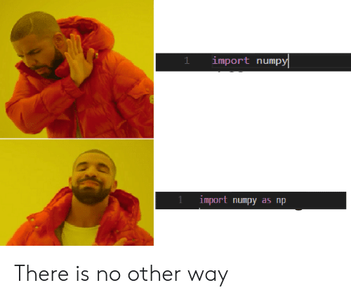

l = [1, 2, 3]
l[1, 2, 3]Tydzień 1 - Numpy
Tydzień 1 - Numpy (ale najpierw listy)
Podstawą wszystkich obliczeń na komputerze są… liczby. Rzadko kiedy operujemy jednak na pojedynczych liczbach, z reguły pracujemy na całych tablicach/wektorach liczb. Do tego właśnie służy numpy.
Ktoś mógłby zapytać co złego jest w wbudowanym typie list. Zacznijmy od przyjrzenia mu się bliżej.
l = [1, 2, 3]
l[1, 2, 3]type(l), l[0], l[-1], len(l), sum(l)(list, 1, 3, 3, 6)Lista może mieć w sobie elementy różnych typów:
l2 = [1, "a", "0"]l2[1, 'a', '0']Indeksowanie elementów listy
l2[0]1l2[:][1, 'a', '0']l2[-1]'0'l2[0], l2[:], l2[-1](1, [1, 'a', '0'], '0')l2[:2][1, 'a']l2[2:]['0']Z racji, że w liście są elementy które nie wiadomo jak do siebie dodać to sum(l2) rzuci błędem.
sum(l2)TypeError: unsupported operand type(s) for +: 'int' and 'str'Dodatkowa uwaga. (Choć nie powinniśmy) to python pozwoli zrobić sum([1, 2.5, 3j]), czyli policzyć sumę listy złożonej z elementów różnych typów.
l3 = [1, 2.5, 3j]
for e in l3:
print(f"Element {e} jest typu {type(e)}")
sum(l3)Element 1 jest typu <class 'int'>
Element 2.5 jest typu <class 'float'>
Element 3j jest typu <class 'complex'>(3.5+3j)Warto pamiętać, że pomnożenie listy przez liczbę int powiela listę.
[0] * 5[0, 0, 0, 0, 0][[], "a", int] * 3[[], 'a', int, [], 'a', int, [], 'a', int][1, 2, 3] * 4[1, 2, 3, 1, 2, 3, 1, 2, 3, 1, 2, 3]W tym przypadku warto zauważyć pewną subtelność, która może powodować problemy w przyszłości. Elementami powiększonej listy będę płytkie kopie elementów.
Przykład więcej pokaże:
ll = [[]] * 3 # lista z trzema pustymi listami
ll[[], [], []]ll[0].append(42) # do pierwszej listy dodajemy 42
ll[0][42]ll # okazuje się, że wszystkie listy to tak naprawdę ta sama lista![[42], [42], [42]]ll = [[] for _ in range(3)]ll[[], [], []]ll[0].append(12)
ll[[12], [], []]W tym kontekście polecam zapoznać się z tymi dwoma wątkami na Stack Overflow:
print(l)
for e in l:
print(e**2)[1, 2, 3]
1
4
9for e in enumerate(l):
print(e)(0, 1)
(1, 2)
(2, 3)for i, e in enumerate(l):
print(i, e**2)0 1
1 4
2 9Warto zaprzyjaźniać się z list comprehension, jest niezwykle przydatne.
l3 = [i**2 for i in range(10)]
l3[0, 1, 4, 9, 16, 25, 36, 49, 64, 81][i**2 for i in range(10) if i % 3 == 0][0, 9, 36, 81]Elementy od trzeciego do końca listy
l3[0, 1, 4, 9, 16, 25, 36, 49, 64, 81]l3[2:][4, 9, 16, 25, 36, 49, 64, 81]Elementy o indeksach od dwa (włącznie) do trzy (wyłącznie). Warto zwrócić uwagę, że ponieważ indeksowanie l[i:j] zwraca listę to dostajemy listę jedno elementową, a nie pojedynczy element l3[2].
l3[2]4l3[2:3][4]l3[2:2][]W pythonie istnieją indeksy ujemne, idą od końca. W tym przypadku dostaniemy całą listę oprócz ostatniego elementu.
l3[:-1][0, 1, 4, 9, 16, 25, 36, 49, 64]Warto pomijać redundantne indeksy jak w przypadku poniżej gdzie chcemy wziąć elementy o indeksach mniejszych od 4.
l3[0:4] == l3[:4]TrueDomyśle indeksowanie pozwala również na branie co któregoś elementu oraz na odwracanie listy.
l3[::2][0, 4, 16, 36, 64]l3[3:8:2] # Od elementu o indeksie do elementu o indeksie mniejszym od 8, co dwa czyli indeksy 3, 5, 7[9, 25, 49]l3[::-1] # Wszystkie elementy co -1 czyli odwrócenie listy.[81, 64, 49, 36, 25, 16, 9, 4, 1, 0]Przypomnieliśmy sobie działanie list w pythonie. W numpy’u podstawową jednostką na jakiej będziemy operować jest np.ndarray, czyli n-dimensional array. Możemy więc myśleć o ndarray’u jak o n-wymiarowej tablicy/wektorze. Dla \(n=1\) będzie to wektor, a dla \(n=2\) macierz. W ogólności takie twory nazywane są z reguły tensorami, ale my będziemy nazywać je arrayami, bo z tą nazwą spotkacie się częściej.
Za każdym razem gdy masz jakiś problem, zanim napiszesz na Slacku, pogoogluj. Prawdopodobnie na stack’u (StackOverflow) ktoś już miał to pytanie… Przykładowe frazy do googla:
Na początku zobaczymy, że wszystko co znamy z list tutaj również zadziała.
Dodatkowo patrz tworzenie array’i

import numpy as npx = np.array([1, 2, 3]) # w ten sposób tworzymy array na podstawie pythonowej listy
xarray([1, 2, 3])x[0], x[-1], len(x)(1, 3, 3)x[1:]array([2, 3])x[2:]array([3])x[::-1]array([3, 2, 1])3 in xTrueArray ma też kilka przydatnych pól:
x.dtype, x.ndim # typ danych w array'u oraz liczba wymiarów(dtype('int64'), 1)# ilość elementów listy w każdym z wymiarów
# zwróć uwagę, że jest to krotka jednoelementowa
x.shape(3,)Teraz stwórzmy array dwuwymiarowy przez wykorzystanie funkcji reshape.
lr = list(range(12))
a = np.array(lr)
aarray([ 0, 1, 2, 3, 4, 5, 6, 7, 8, 9, 10, 11])Zwróć uwagę, że docelowe wymiary podajemy jako krotkę
a2 = a.reshape((3, 4))
a2array([[ 0, 1, 2, 3],
[ 4, 5, 6, 7],
[ 8, 9, 10, 11]])Wywołanie metody reshape na a nie zmienia go:
aarray([ 0, 1, 2, 3, 4, 5, 6, 7, 8, 9, 10, 11])a2[0, :] # pierwszy wierszarray([0, 1, 2, 3])a2[:, 0] # pierwsza kolumnaarray([0, 4, 8])a2[2, 3] # Element z 3-go wiersza i 4-tej kolumny11a2[:, ::2] # wszystkie wiersze i co druga kolumnaarray([[ 0, 2],
[ 4, 6],
[ 8, 10]])a2[:, 1::2] # wszystkie wiersze i co druga kolumna od tej o indeksie 1array([[ 1, 3],
[ 5, 7],
[ 9, 11]])W praktyce rzadko kiedy tworzymy array’e z list pythonowych, bo to oznacza, że najpierw musimy stworzyć listę, żeby dopiero później zamienić ją na array.
Teraz poznamy najczęściej używane funkcje do tworzenia array’i.
np.zeros((2, 4))array([[0., 0., 0., 0.],
[0., 0., 0., 0.]])np.ones((2, 3))array([[1., 1., 1.],
[1., 1., 1.]])np.arange(10) # zwróć uwagę, że w ostatnia liczba jest mniejsza od 10array([0, 1, 2, 3, 4, 5, 6, 7, 8, 9])np.arange(10).reshape((2, 5))array([[0, 1, 2, 3, 4],
[5, 6, 7, 8, 9]])np.arange(2, 10, 3) # od, do, co ilearray([2, 5, 8])np.linspace(0, 5) # koniec jest również _włączony_array([0. , 0.10204082, 0.20408163, 0.30612245, 0.40816327,
0.51020408, 0.6122449 , 0.71428571, 0.81632653, 0.91836735,
1.02040816, 1.12244898, 1.2244898 , 1.32653061, 1.42857143,
1.53061224, 1.63265306, 1.73469388, 1.83673469, 1.93877551,
2.04081633, 2.14285714, 2.24489796, 2.34693878, 2.44897959,
2.55102041, 2.65306122, 2.75510204, 2.85714286, 2.95918367,
3.06122449, 3.16326531, 3.26530612, 3.36734694, 3.46938776,
3.57142857, 3.67346939, 3.7755102 , 3.87755102, 3.97959184,
4.08163265, 4.18367347, 4.28571429, 4.3877551 , 4.48979592,
4.59183673, 4.69387755, 4.79591837, 4.89795918, 5. ])np.linspace(0, 5, 5)array([0. , 1.25, 2.5 , 3.75, 5. ])np.array([1, 2, 3]).repeat(3)array([1, 1, 1, 2, 2, 2, 3, 3, 3])np.tile(np.array([1, 2, 3]), 3)array([1, 2, 3, 1, 2, 3, 1, 2, 3])np.random.rand(10) # 10 liczb losowych z przedziału [0, 1)array([0.63359743, 0.73224512, 0.80959342, 0.92153461, 0.27311182,
0.25970235, 0.14308508, 0.61214344, 0.62586545, 0.72338144])Choć nie padło to jeszcze wprost to widać, że wszystkie elementy array’a są tego samego typu, a przez to zajmuje tyle samo miejsca na dysku. Jeżeli bardzo się postaramy to może to być najogólniejszy typ object, który trzyma referencje do obiektów, ale z reguły oznacza to, że gdzieś popełniliśmy błąd, przykład niżej.
Poniżej przykłady jak zmieniać typ array’a bądź wybrać go przy tworzeniu. Z reguły domyślnie jest to int, bądź float. Kropeczka przy liczbie zawsze oznacza zmiennoprzecinkowość.
(np.zeros(3),
np.zeros(3, dtype=int),
np.zeros(3, dtype=bool),
np.zeros(3, dtype=np.uint16),
np.zeros(3, dtype=complex))(array([0., 0., 0.]),
array([0, 0, 0]),
array([False, False, False]),
array([0, 0, 0], dtype=uint16),
array([0.+0.j, 0.+0.j, 0.+0.j]))x = np.zeros(3)
x[0] = 12
x[2] = -1
x.astype(np.float16)array([12., 0., -1.], dtype=float16)qq = np.arange(5)
qqarray([0, 1, 2, 3, 4])qq.dtypedtype('int64')1/20.5qq / 2array([0. , 0.5, 1. , 1.5, 2. ])Znowu, oryginalny x nie został zmodyfikowany.
xarray([12., 0., -1.])Zwróć uwagę, że takie działanie może powodować klasyczny overflow!
x.astype(np.uint8)array([ 12, 0, 255], dtype=uint8)\(1 \cdot 10^{100}\)
x = np.array([1e100])
x, x.astype(np.float16)(array([1.e+100]), array([inf], dtype=float16))np.array(["ala", 2, int])array(['ala', 2, <class 'int'>], dtype=object)Warto wiedzieć, że taki powyższy np.inf (ang. infinity) też jest liczbą tylko specjalną. Oprócz niego jest jeszcze np.nan czyli not a number. W ogólności jest to część standardu IEEE 754 mówiącego o tym jak powinny zachowywać się liczby zmiennoprzecinkowe. Takie same zachowania dostaniesz w każdym innym języku programowania (no tak mniej więcej).
a = np.inf
a, a*5, a-4, a*0, -a, a+2, a-aUwaga!!! Nan nanowi nie równy
[Tu miał być mem z kaszką NAN ale nes*** nie wyszło z rosji]
np.nan == np.nan, np.nan != np.nan, np.nan < np.nan, np.nan >= np.nanOk, umiemy tworzyć i indeksować array’e, ale po co? Otóż żeby coś na nich liczyć!
To co odróżnia array’e od list to ich zwektoryzowanie! To oznacza, że zapominamy o pętlach i od teraz dokonujemy operacji na całych array’ach!
x = np.arange(4)
xarray([0, 1, 2, 3])x * 2array([0, 2, 4, 6])x ** 2array([0, 1, 4, 9])np.sin(x)array([0. , 0.84147098, 0.90929743, 0.14112001])Co ważne (z punktu widzenia wydajności) to array’e numpy’owe żyją jako tablice w C. Wykonanie operacji y = x * 2 oznacza wymnożenie tablicy przez 2 w C i dopiero później przekazanie wyniku do pythona.
Dzięki temu numpy jest równie szybki jakby napisać:
int x[10];
int y[10];
for (int i=0; i<10; i++)
x[i] = i;
for (int i=0; i<10; i++)
y[i] = x[i] * 2;Tylko troszkę bardziej przyjemny w obsłudze :)
Domyślam się, że nie jesteś na tym kursie żeby poznać same podstawy, na pewno interesują Cię jakieś smaczki i subtelności które pokażą, że jesteś sprawnym użytkownikiem numpy’ia!
np.r[] czyli nie chce pamiętać np.array, np.arange, np.linspace i innych.Gdy piszesz dużo w numpy, starasz się znajdywać skróty, jednym z nich jest np.r_[] oraz np.c_[] (od row i column).
W podstawowej formie zastępuje np.array:
np.r_[0, 1, 2]Ale również arange:
np.r_[:3], np.r_[3:7:2]Oraz linspace! Zwróć uwagę, że technicznie rzecz biorąc, ostatnia liczba w range’u to n jednostek urojonych :D
np.r_[0:5:4j], np.r_[0:5:11j]To nie wszystko, możemy od razu łatwo tworzyć macierze!
np.c_[[0, 1], [2, 3]]hstack
x = np.r_[:3]
np.r_[x, x], np.c_[x, x]np.r_[:3, :5, :3]Czasem przy reshapowaniu nie chce nam się liczyć ostatniego wymiaru, który jest oczywisty , bo wychodzi z innych. Na to też jest trick.
# automatycznie zostało wyliczone 111//3 == 37 i wstawione za -1
np.arange(111).reshape((3, -1)) Oczywiście nie jest to pełny opis możliwości numpy’a, ale warto sprawdzić w razie potrzeb:
np.linalg - rozkłady macierzy, wartości własne itd.np.fft - szybka transformata Fourieranp.random - różne rozkłady oraz generatory liczb losowychnp.polynomial - praca z wielomianaminp.histogram - histogram ale same liczbynp.einsum - super sprytne obliczenia na tensorachW przypadku zadania z Monte Carlo zacznij od oszacowania liczby \(\pi\) :)
Kilka linków które mogą się przydać:
Poniżej znajdziesz więcej zdań do poćwiczenia. Odpowiedzi z podpunktów 5 i 9 umieść w google formsie.
Korzystając z następującego array’a:
np.random.seed(1337)
x = np.round(np.random.normal(size=30), 2)
y = x + np.round(np.random.normal(size=30) * 0.1, 2)
xWyznacz/policz:
xxxxxx i yx i yx i yx i yNapisz funkcję standardize(X), która unormuje każdą kolumnę macierzy X (każdą oddzielnie). Średnia z każdej kolumny powinna być równa \(0\), a odchylenie standardowe równe \(1\). Jest to procedura bardzo często stosowana w MLu.